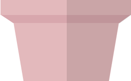
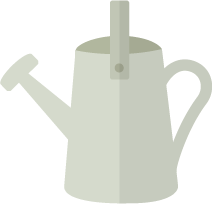

^
Plant It!
- Drag plant seeds to the pot.
- Click on the watering can that appears.
- Your plant is ready! Go to Tutorial 3.

">

How it Works
-
Insert the jQuery and jQuery UI CDNs before the closing body tag in your HTML file.
<script src="https://ajax.googleapis.com/ajax/libs/jquery/3.1.1/jquery.min.js"></script> <script src="https://code.jquery.com/ui/1.12.1/jquery-ui.min.js"></script> - Add the following code to your corresponding HTML, CSS, & Javascript files. In the HTML code, make sure that the data-drag source links to the image you would like to appear after dragging.
For the Javascript, the first function uses jQuery UI draggable() and droppable() methods to make an img (or any element) draggable/droppable. The second function toggles the waterdrops on/off..pot { width: 266px; position: relative; margin: 100px auto; } .potted-plant { position: absolute; top: -102px; left: -19px; width: 300px; height: 280px; } .drag { width: 250px; height: 200px; margin-top: -255px; margin-left: 50px; } .drag img { cursor: pointer; display: block; } #drag01 { position: absolute; top: 73px; left: 39px } @keyframes animateWater { 0% { -webkit-transform: translateY(0); transform: translateY(0); opacity: 0; } 50% { opacity: 0.8; } 100% { -webkit-transform: translateY(150%); transform: translateY(150%); opacity: 0; } } .clickable { width: 266px; position: relative; top: -247px; left: 70%; cursor: pointer; } #clickCan { position: absolute; } .water { display: none; position: absolute; top: -160px; left: 50%; z-index: -10; } .clicked .water { display: block; } .waterdrops li { position: absolute; width: 38px; height: 62px; background: url('../images/drop-water.png'); -webkit-animation: animateWater 2s ease infinite; animation: animateWater 2s ease infinite; } .waterdrops li:nth-child(1) { -webkit-animation-delay: 0.8s; animation-delay: 0.8s; left: -100px; top: 50px; } .waterdrops li:nth-child(2) { -webkit-animation-delay: 0.3s; animation-delay: 0.3s; left: -45px; top: 30px; } .waterdrops li:nth-child(3) { -webkit-animation-delay: 0.6s; animation-delay: 0.6s; left: 70px; top: 40px; } .waterdrops li:nth-child(4) { -webkit-animation-delay: 0.6s; animation-delay: 0.6s; left: -35px; top: -30px; } .waterdrops li:nth-child(5) { -webkit-animation-delay: 1s; animation-delay: 1s; left: 30px; top: 5px; }$(function(){ $(".drag img").draggable(); $('.potted-plant').droppable({ drop: function(event, ui) { var droppedObject = ui.draggable.data('drag'); $(this).prepend(droppedObject); ui.draggable.remove(); } }); }); $('body').removeClass('clicked'); $('#clickCan').click(function(){ $('body').toggleClass('clicked'); });